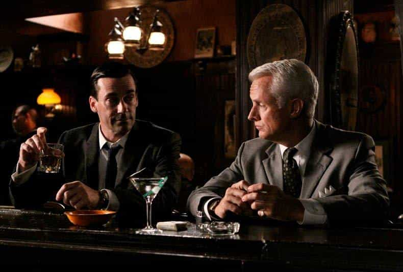
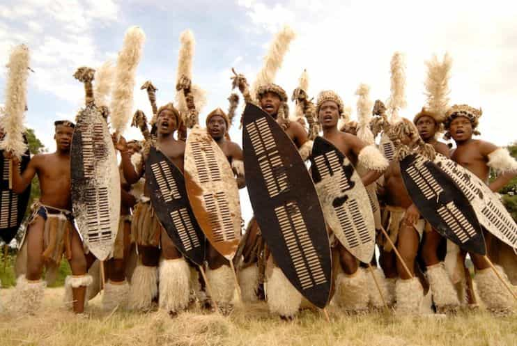

Corey is an iconoclast and the author of 'Man's Fight for Existence'. He believes that the key to life is for men to honour their primal nature. Visit his new website at primalexistence.com


Of all human relationships, I would argue that male bonding is the most important of them all (yes, above sex relations and family) that defines a man’s identity. Every successful society through the progress of humanity existed because men who were dedicated and committed to their tribe worked together as one to build and fight. In contrast, the lack of male bonding that we see today is both a cause and symptom of the debasement of masculinity.
That said, I think it’s more imperative now than ever to restore male bonding and brotherhood to counter modern society’s efforts to divide us and make us weak. We need to form groups to reassert ourselves as men. Towards this end, here are some traits you should seek in other men while cultivating them yourself.

Friendship is nothing without loyalty and this is especially true among men. In fact, I would go as far as to say that this is the most important trait a man should have (that, of course, doesn’t mean that other traits aren’t important). Really, what are we but bunch of goons and individualist drones if we can’t even remain committed to our friends?
On the flip side, however important loyalty may be, there are limits to be observed. Basic principles need to be guarded and you must ensure that you’re not being suckered into a position of being used by some of the more selfish and narcissistic men with no honor.

Men need to be reliable for one another. Leave the flaking, incompetence, and making excuses for the females. As men, we need to enhance each other’s lives rather than detract from them. I’m sad to report that I’ve had female friends who were far more reliable than many men whom I placed my trust on—and this is coming from someone who is advocating for men to shun friendship with women.
Now, this doesn’t mean you should be a complete tool and be a yes-man who will do anything and everything for your friends, but I think we can all try to be a little more reliable for one another.
In spite of whatever differences we may have, we in the manosphere share the fact that we have all taken the red pill and experienced what it is like to be a man in the current state of society. We know the hardships associated with the conditions we’ve been thrown in, so I think we need to be more understanding of each other rather than being judgmental.
The truth is, nobody really knows what it means to be a man in the modern world where men aren’t foisted with the same responsibilities that our forefathers had. Yes, we have some vague ideas about strength, confidence, being able to attract women, etc., but those are not necessarily masculine identities. There are especially many young men who may not have been so fortunate to have strong fathers or had the chance to grow up in a more masculine environment. These men are lost and confused, they fumble and make mistakes, but they’re trying. I believe those who are more developed and accomplished shouldn’t look down on those are still struggling to make something for themselves.
Men should be supportive of their friends, but only up to a point. Every man is different and has different philosophy on how to help and how much. I personally do as much as I humanly can to support any man who asks for help in any form. And if you’re the one in the position of needing help, know that it’s a skill you have to learn. Too much, you’re just being needy and dependent; too little (or none at all), and you might be needlessly putting yourself at a disadvantage out of fear or pride. But if a fellow man who is supposed to be a friend doesn’t offer you a hand or even a word of solace during your darkest hours, I say lose him.
This is one thing I’ll agree on with this hippie.
I think brutal honesty is something we should start practicing more often as men. Fake compliments and fake reassurances are for women. As men, we need to tell each other the harsh truths so that we will grow instead of being coddled inside a bubble. Like many other men, I’ve always been afraid to simply tell the truth because I didn’t want to seem blunt, rude, arrogant, or whatever. But no more.
This, of course, doesn’t mean that you should always speak your mind or always tell the truth, but that you should do so at the right moment with the people who matter to you. If you’re in doubt, just try it out and see your confidence grow while conflict and ambiguity clears from your heart.

I had a friend with all of the above traits. He was more loyal, reliable, understanding, supportive, and honest than any other man I’ve met. He was truly a good man with good intentions. But there was just something about him that made me feel a strain of aversion; it was as if he was infected with something that I wanted to avoid by limiting my contact with him. And I knew exactly what it was: he was too effeminate. In spite of the fact that he was morally upstanding and not like the I’m too cool assholes I’ve dealt with, I just found it very hard to connect with him because he was too soft (I guess I now know how girls feel about nice guys).
I read in a book called The Charisma Myth that charisma is power plus warmth. If we were to apply that concept to masculinity, I would say that the ideal man for friendship is someone who is tough yet sympathetic, ruthless yet kind, masculine yet humane. Look for those men and try to be one yourself.

Finally, men need a sense of shared identity or a mission to form a brotherhood. Men in tribes before civilization were grouped out of necessity and purpose. For that reason, all of the traits listed here were invaluable for their survival and dominance. But with the advent of the modern, gynocentric order, men today just occasionally get together to drink, talk, or have fun. There is nothing that compels men to group and bond together as they were meant to. I suppose this is why so many men today engage in surrogate activities like spectator sports and multi-player video games just to experience the emotional high that comes with masculine camaraderie: something that had been robbed from them. This must change.
If you want a male group, don’t wait for some signal or for some leader to emerge and rally you. Find other men that you belong to and create a purpose for you to unite under. Seek closer ties with men you already know and are in contact with. The more divided we are, the more we’ll be exploited and the more the others will try to control us. There are countless men out there who share the same views and issues as you, but it isn’t enough to just interact on the Internet. Whether it be with personal relationships or political connections, try to solidify your bonding with other men.
Read More: How To Avoid The 3 Worst Qualities Of The Beta Male